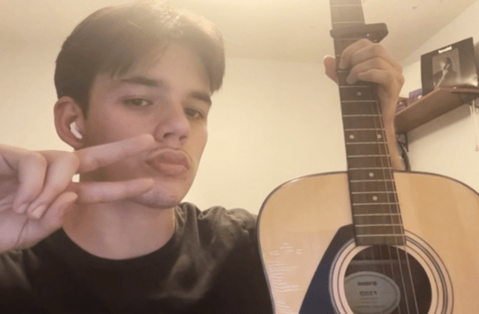

Introduction

Me & my 6-string acoustic via webcam
- Personal background: Born in Houston (2004), moved to Charlotte a few years later in 2007 and I've been living here since. Eagle Scout / NJROTC Graduate / Self-Taught Musician & Producer (still teaching myself…). This is my 2nd year as a full-time student at CPCC.
- Professional background: At 16 I picked up a job at Harris Teeter working as a cashier, stocker, and whatever else they needed me to do. Eventually dropped that and worked for Discount Tire as a tire technician / crew chief for around 8 months.
- Academic background: K-8 at Waddell Language Academy. South Meck High School all 4 years. Throughout my Junior & Senior years I had dual-enrollment with CPCC where I knocked out some general ed. classes. Only 5 courses away from finishing my Associates in Full-Stack Programming.
- Background in this subject: A couple summers ago I decided to get a headstart on my programming career by taking a 7 hour html/css course. Since then I've been moving along well towards my Full-Stack development degree.
- Primary Computer Platform: MacOS Ventura (2021 MacBook Pro)
- Courses I'm Taking & Why:
- CSC-221 - Advanced Python Programming: Degree Req. + Will teach me all about data retrieval, data manipulation, etc.
- WEB-250 - Database Driven Websites: Degree Req. + Will help strengthen my front-end programming skills
- CTS-118 - IS Professional Comm.: Degree Req. + Covers all scopes of software development
- WEB-215 - Adv. Markup & Scripting: Degree Req. + Might become my main language
- Funny/Interesting Item about Yourself: Trilingual. (English, Spanish, French), I make music under the name “André Soriah”.